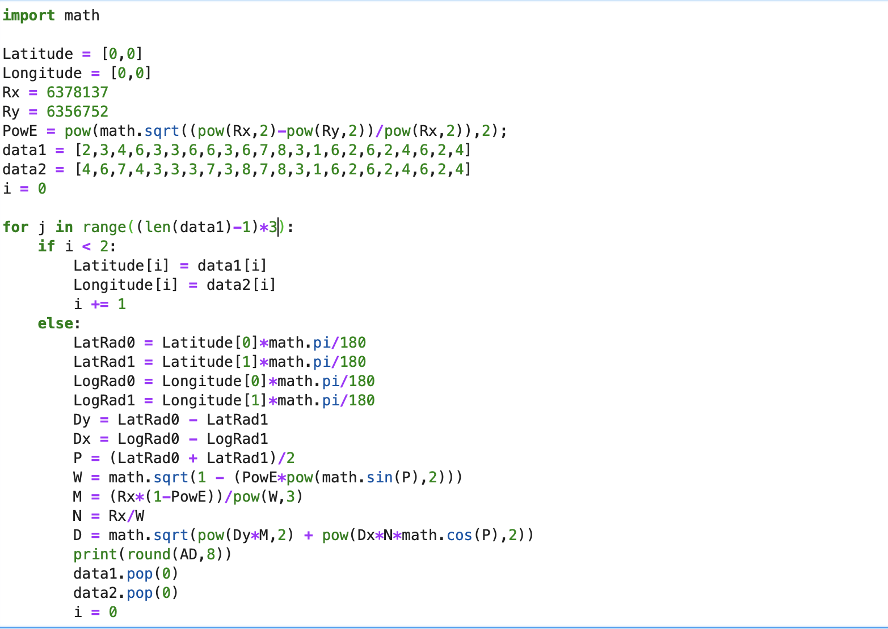
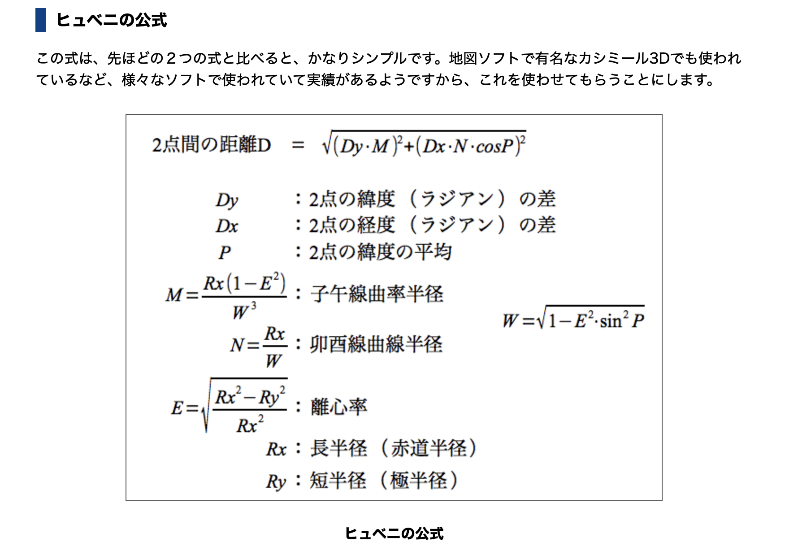

Hello!

・Macbook pro
・jupyter lab
・参考サイト
数式は、参考サイトに掲載されているものを使用します。
それはこちら↓

全体のコードはこちらです。
import math
①まずはsqrtなどを使用するため、mathをインポートします。
Latitude = [0,0]
Longitude = [0,0]
Rx = 6378137
Ry = 6356752
PowE = pow(math.sqrt((pow(Rx,2)-pow(Ry,2))/pow(Rx,2)),2)
data1 = [2,3,4,6,3,3,6,6,3,6,7,8,3,1,6,2,6,2,4,6,2,4]
data2 = [4,6,7,4,3,3,3,7,3,8,7,8,3,1,6,2,6,2,4,6,2,4]
i = 0
②次に使用する配列と変数、データを用意します。
※data1&data2は、実際に取得するデータを想定しています。
for j in range((len(data1)-1)*3):
if i < 2:
Latitude[i] = data1[i]
Longitude[i] = data2[i]
i += 1
③そして、for文で取得したデータを配列に格納してi < 2になるまで回します。
else:
LatRad0 = Latitude[0]*math.pi/180
LatRad1 = Latitude[1]*math.pi/180
LogRad0 = Longitude[0]*math.pi/180
LogRad1 = Longitude[1]*math.pi/180
④i < 2ではなくなったら、まずは角度をラジアンに変換します。
Dy = LatRad0 - LatRad1
Dx = LogRad0 - LogRad1
P = (LatRad0 + LatRad1)/2
W = math.sqrt(1 - (PowE*pow(math.sin(P),2)))
M = (Rx*(1-PowE))/pow(W,3)
N = Rx/W
D = math.sqrt(pow(Dy*M,2) + pow(Dx*N*math.cos(P),2))
print(round(AD,8))
⑤あとは、数式を見て値を当てはめてプリントするだけです。
data1.pop(0)
data2.pop(0)
i = 0
⑥最後に、配列の0番目を消去しi = 0にして、for文が回り続けるようにします。
これでヒュベニの公式をpythonに実装できました。
計算方法に間違いがあったり、もっと良い書き方があったら指摘いただけたら嬉しいです。
Fin.